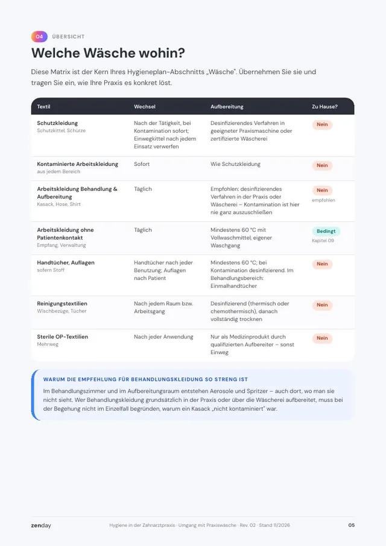
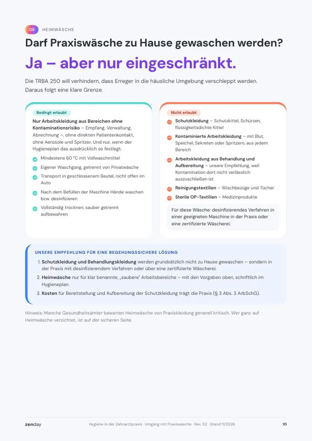
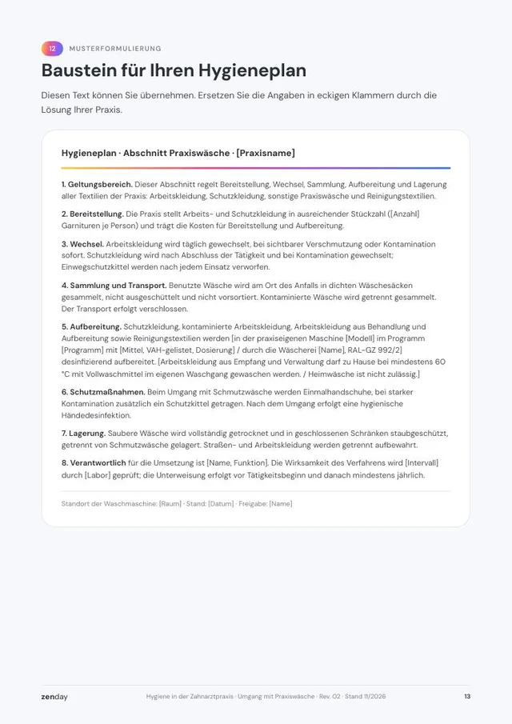
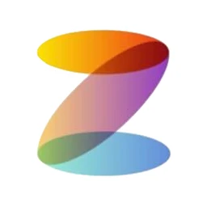

Wer wäscht den Schutzkittel? Die Antwort, die Ihre Begehung erwartet.
Der aktualisierte Leitfaden regelt Wechselrhythmus, Waschverfahren, Heimwäsche und Nachweise – mit Musterformulierung für Ihren Hygieneplan. Stand November 2026, kostenlos als PDF.

- 7Textilarten mit Wechsel, Verfahren und „zu Hause: ja oder nein“
- 18Prüfpunkte als Checkliste für die Begehung
- 16Seiten, inklusive Baustein für Ihren Hygieneplan
Leitfaden kostenlos erhalten
PDF, 16 Seiten. Download direkt nach dem Absenden.
Erkennen Sie Ihre Praxis wieder?
Jede wäscht anders
Manche nehmen den Kasack mit nach Hause, andere waschen in der Praxis. Eine gemeinsame Regel gibt es nicht.
Ein Satz im Hygieneplan
Zur Wäsche steht dort ein Satz – aber kein Verfahren, keine Zuständigkeit und kein Nachweis.
Reichen 60 °C?
Die Begehung steht an, und Sie sind unsicher, ob „60 °C mit Hygienespüler“ für Schutzkleidung genügt.
Wenn Sie sich wiedererkennen, fehlt meist kein Wissen. Es fehlt eine klare Regel, die das ganze Team gleich umsetzt.
Geprüft wird selten Ihr Text. Geprüft wird, ob die Regel im Alltag gelebt wird.
Der Leitfaden übersetzt die Vorgaben in eine Übersicht, die Ihr Team sofort versteht – und in Nachweise, die Sie bei der Begehung vorlegen können.
- Welche Wäsche wohin – 7 Textilarten mit Wechsel, Verfahren und der Antwort „zu Hause: ja oder nein“.
- Wechselrhythmus – täglich statt „2× pro Woche“, wie es in vielen alten Vorlagen noch steht.
- Waschverfahren verständlich – 90 °C mit 10 Minuten Haltezeit, chemothermisch nach VAH-Listung, Haushalts- oder gewerbliche Maschine.
- Heimwäsche – die klare Grenze nach TRBA 250 und unsere Empfehlung für eine eindeutige Regel.
- Der Wäschekreislauf in 6 Schritten – vom Sammeln bis zur Lagerung.
- Zum Übernehmen – Musterformulierung, Checkliste mit 18 Prüfpunkten und Fristen-Tabelle mit 10 Aufgaben.



Die Regelwerke sind neu – viele Hygienepläne nicht
Diese Änderungen sind im Leitfaden bereits eingearbeitet.
| Seit | Was sich geändert hat |
|---|---|
| 11/2025 | TRBA 250 neu gefasst: Arbeitskleidung mit Schutzfunktion stellt und reinigt die Praxis, Keimverschleppung nach Hause ist zu verhindern |
| 2026 | DAHZ-Hygieneleitfaden in 17. Ausgabe – Grundlage vieler Hygienepläne in Zahnarztpraxen |
| laufend | Bei Begehungen zählt der Nachweis: gelistetes Verfahren, Wäscherei-Zertifikat, Unterweisung |
Damit die Regel nicht im Ordner bleibt
In zenday wird der Abschnitt Wäsche zur Arbeitsanweisung. Die Fristen werden Aufgaben mit Verantwortlichen und Erinnerung – Listung prüfen, Wirksamkeitstest, Unterweisung.



Gründer von zenday
Erstellt vom zenday-Team. Wir haben über 25 Begehungen gemeinsam mit Praxen begleitet. Der Leitfaden folgt TRBA 250, KRINKO-Empfehlung und DAHZ-Hygieneleitfaden und ist so geschrieben, dass Ihr Team ihn ohne Vorwissen umsetzen kann.
Gut zu wissen
Was kostet der Leitfaden?
Nichts. Sie laden das PDF direkt nach dem Absenden herunter und können es beliebig oft ausdrucken.
Passt er zu unserer Praxis?
Ja. Er ist für Zahnarztpraxen jeder Größe geschrieben – egal ob Sie selbst waschen, eine Wäscherei beauftragen oder Einwegkittel nutzen.
Ersetzt der Leitfaden eine Rechtsberatung?
Nein. Er gibt den fachlichen Stand wieder. Landesrecht und die Praxis Ihres Gesundheitsamts können strenger sein; Hinweise dazu stehen im Leitfaden.
Was passiert mit meinen Daten?
Wir nutzen Ihre Angaben, um Ihnen den Leitfaden bereitzustellen und Sie bei Fragen zu erreichen. Weitere E-Mails erhalten Sie nur mit Ihrer Einwilligung. Details in unserer Datenschutzerklärung.